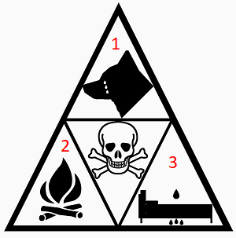
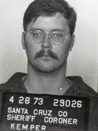

Les tueurs en série
Bienvenue sur cette page web, ici, nous allons traiter un sujet très sérieux : les tueurs en séries. Pour commencer nous allons parler d'un des plus grand profiler aux mondes, puis voir les traits psychologiques les plus souvent présents chez ce type de personne, en passant par quelques cas les plus connus, et pour finir, je vais vous présenter quelques médias autour de ce sujet.
John Edward Douglas
John Edward Douglas est un ancien agent du F.B.I, il est connu pour être un des premiers profilers au monde.
Un profilers "analyste comportementale" est une personne dressant un portrait psychologique d'une personne faisant l'objet d'une recherche.
John Douglas a au cours de sa carrière eu une grande influence sur l'arrestation de nombreux tueurs en série. C'est aussi un auteur de beaucoup de livres sur la psychologie et sur l'histoire de certains criminels.
Dans la majorité des cas ce qui pousse ces personnes à commettre ces atrocités est liés au développement dès l'enfance (maltraitance, gros manque affectif, violence...), il existe beaucoup de type d'analyse psychologique pour prévoir un potentiel chemin sociopathe ou psychopathe chez la personne notamment une très connue : la triade Macdonald.

-
Cruauté envers les animaux
-
Incendie criminel
-
L'énurésie
Si au moins deux de ces facteurs et présents durant l'enfance et/ou qui persiste après un certains âge, ça peut être considéré comme une prédictive à des tendances violentes. Bien-entendu ce n'est qu'une hypothèse avancée par quelques psychiatres comme John Macdonald et quelques agents du F.B.I comme John Edward Douglas, cela ne s'applique pas à l'ensemble des criminels !

Edmund Emil Kemper
Il est né le 18 décembre 1948 à Burbank en Californie aux États-Unis, c'est un tueur en série américain accusé de 10 meurtres. Il commence une série de meurtres le 7 mai 1972 dans la région de Santa Cruz. Il aurait tué 7 jeunes femmes, ses grands-parents à l'âge de 15 ans et sa propre mère.
Jeffrey Dahmer
Il est né le 21 mai 1960 à Milwaukee, Wisconsin aux États-Unis, c'est un tueur en série américain qui a avoué avoir assassiné dix-sept jeunes hommes entre 1978 et 1991. Il commet son premier meurtre en juin 1978, à l'âge de 18 ans. En 1992, il est condamné à 957 ans de prison (correspondant à 17 fois la peine de perpétuité).
Ted Bundy
Theodore Robert Cowell est né le 24 novembre 1946 à Burlington, Vermont aux États-Unis, c'est un tueur en série américain qui a agressé et assassiné de nombreuses jeunes femmes et filles durant les années 1970. Il aurait avoué une trentaine d'homicides dans sept États américains différents entre 1974 et 1978. Le nombre de victimes exact demeure inconnu, mais pourrait être beaucoup plus élevé.